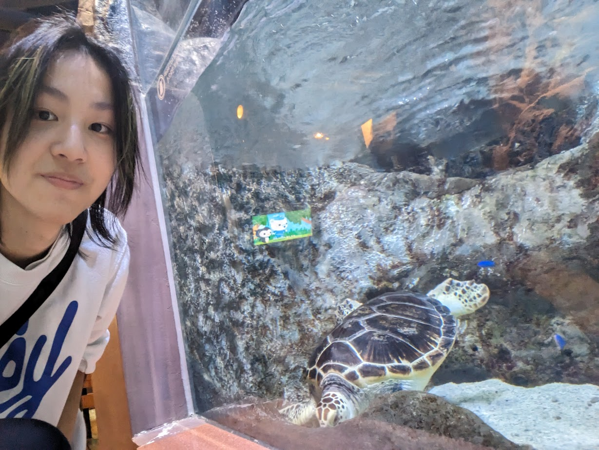
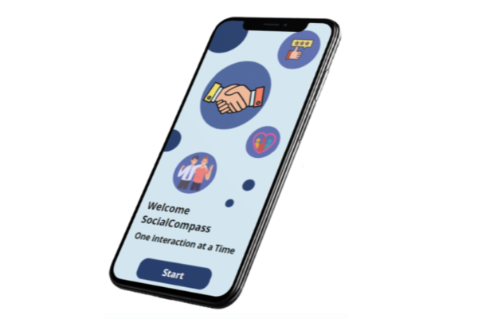
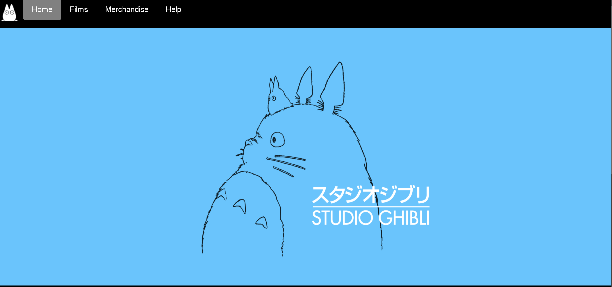

Hey, I'm Noel, I'm a student and an aspiring UI/UX Developer who loves designing apps and websites that people genuinely enjoy using. I'm all about creating user-friendly, intuitive experiences and bringing my ideas to life through clean and functional designs. I'm always excited to learn, grow, and take on new challenges in the world of design and development.
About Me

My Projects
Social Compass

SocialCompass is an innovative app created to help PWIDs navigate
social interactions through guided scenarios, preparing them for
real-life situations with confidence. It also features Andy, a
personalized chatbot companion that provides emotional support,
skill reinforcement, and real-time guidance. Designed and developed
by Team Snoopy, the app earned recognition as a winner at the Dell
Innovate Fest 2024.
Article Link
AutoTestHub

AutoTestHub is an innovative solution developed by our team for Ngee
Ann Polytechnic's annual BYTE Hackz hackathon. This platform
streamlines app testing through automation, featuring a
user-friendly dashboard for managing tests and an AI-powered
solution suggester. The AI suggester provides targeted
recommendations to address error messages detected during testing,
empowering developers to resolve issues efficiently and enhance the
overall development process.
Repository Link

This ghibli fan site was created for my front end development
module. It was my first web development project, using simple
html,css and js.
Repository Link
Contact Me
Email: noelyapbx2112@gmail.com
LinkedIn: Yap Bao Xuan Noel
Phone: +65 9119 2466